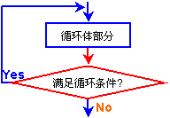
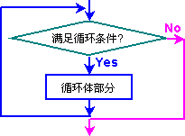

循环结构是一个重要的程序结构，它具有重复执行某段程序的功能。通常，循环结构包括以下四个组成部分：
以上四部分可以在程序中用各种不同的形式体现出来，有时也并非清析地表达出来。常用的循环结构如图6.3所示。

(a)、Do—While结构
(b)、While结构
在编写循环结构的程序片段时，我们可以多种方法来循环结构。如：循环次数是已知的，可用LOOP指令来构造循环；当循环次数是未知或不定的，则可用条件转移或无条件转移来构成循环结构。
例6.10 分类统计字数组data中正数、负数和零的个数，并分别存入内存字变量Positive、Negative和Zero中，数组元素个数保存在其第一个字中。
解：
DATA1 SEGMENT
data DW 10
DW 2130, -43, 31, -321, -1234, 345, 0, 3213, 0, 5477
Positive DW 0
Negative DW 0
Zero DW 0
DATA1 ENDS
CODE1 SEGMENT
ASSUME CS:CODE1, DS:DATA1
START: MOV AX, DATA1
MOV DS, AX
XOR AX, AX ;用AX来对正数计数
XOR BX, BX ;用BX来对负数计数
XOR DX, DX ;用DX来对零计数
MOV CX, data ;用CX来进行循环计数
JCXZ save ;考虑数组的元素个数为0的情况
LEA SI, data+2 ;用指针SI来访问整个数组
again: CMP word ptr [SI], 0
JL lower
JE equal
INC AX
JMP loop1
lower: INC BX
JMP loop1
equal: INC DX
loop1: ADD SI, 2
LOOP again
save: MOV Positive, AX ;把各类的统计数保存到内存单元中
MOV Negative, BX
MOV Zero, DX
MOV AX, 4C00H
INT 21H
CODE1 ENDS
END
例6.11 计算数组score的平均整数，并存入内存字变量Average中，数组以-1为结束标志。
解：
DATA1 SEGMENT
data DW 90, 95, 54, 65, 36, 78, 66, 0, 99, 50, -1
Average DW 0
DATA1 ENDS
CODE1 SEGMENT
ASSUME CS:CODE1, DS:DATA1
START: MOV AX, DATA1
MOV DS, AX
XOR AX, AX
XOR DX, DX ;用(DX，AX)来保存数组元素之和
XOR CX, CX ;用CX来保存数组元素个数
LEA SI, data ;用指针SI来访问整个数组
again: MOV BX, word ptr [SI]
CMP BX, 0
JL over
ADD AX, BX
ADC DX, 0 ;把当前数组元素之值加到(DX，AX)中
INC CX ;数组元素个数加1
ADD SI, 2
JMP again
over: JCXZ exit ;防止零作除数，即数组是空数组
DIV CX
MOV Average, AX
exit: MOV AX, 4C00H
INT 21H
CODE1 ENDS
END START
二、用伪指令实现的循环结构
在宏汇编MASM 6.11系统中，还增加了表达循环结构的伪指令，以便更清晰地表达WHILE循环、REPEAT-UNTIL循环。另外，还增加两个辅助循环的伪指令。这些伪指令的书写格式和含义与高级语言中相应语句的书写格式和含义相一致，所以，这些伪指令是很容易掌握的，也是非常有用的。
循环伪指令的格式和含义如下：